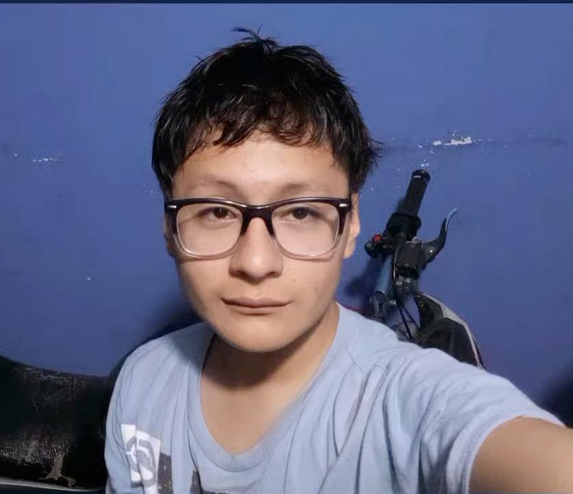

Soy Anderson Ricardo Jafet Gomez Garcia, estudiante de programación nacido el 2 de octubre de 2008 en Ciudad de Guatemala, Guatemala.
Actualmente estudio informática y tengo como meta convertirme en ingeniero en sistemas y desarrollador de software senior full stack.
Crecí en la Ciudad de Guatemala junto a mi familia, enfrentando distintas dificultades económicas que me enseñaron resiliencia, responsabilidad y perseverancia.
Desde pequeño desarrollé un gran interés por la ciencia, las matemáticas, la física y la tecnología, especialmente por las computadoras y el hardware.
Durante mi infancia me gustaba explorar aparatos electrónicos para entender cómo funcionaban, aunque muchas veces terminaban descompuestos por mis experimentos.
En primaria destaqué en ferias científicas realizando proyectos relacionados con química, matemáticas y física.
Uno de mis proyectos más destacados fue una demostración química de la serpiente del faraón, con la cual obtuve el primer lugar en ciencias naturales.
También realicé proyectos relacionados con lógica matemática usando tablas de verdad y una máquina miniatura de algodón de azúcar basada en principios físicos y termodinámicos.
La pandemia del COVID-19 representó un cambio importante en mi vida académica, ya que tuve que adaptarme al estudio independiente debido a la falta de recursos.
Con el paso del tiempo desarrollé más habilidades sociales y encontré amistades importantes que marcaron mi vida durante la etapa de básicos.
He atravesado situaciones personales y familiares difíciles que impactaron mi vida emocional y académica, pero aun así continué esforzándome por seguir adelante.
Actualmente continúo luchando por mejorar como persona, fortalecer mi disciplina, aprender nuevas tecnologías y construir un mejor futuro para mí y mi familia.
Me considero una persona resiliente, analítica, curiosa y creativa, siempre interesada en aprender cosas nuevas y superar desafíos.